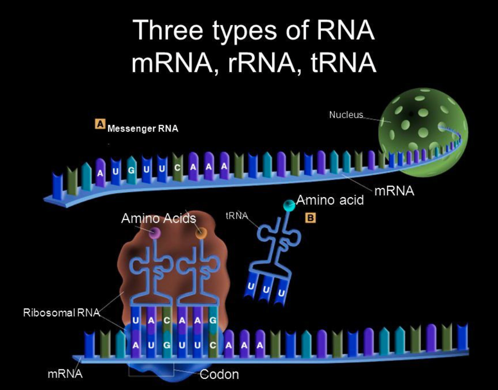

What is RNA?
- RNA (Ribonucleic Acid) helps in protein synthesis and gene regulation.
- Made of a single strand of nucleotides.
- Uses ribose sugar and the base uracil (U) instead of thymine (T).
Main Types of RNA
- Messenger RNA (mRNA)
- Function: Carries genetic instructions from DNA in the nucleus to ribosomes in the cytoplasm, where proteins are made.
- Key Point: Acts as a template for building proteins during translation.
- Transfer RNA (tRNA)
- Function: Brings the correct amino acids to the ribosome according to the mRNA code.
- Key Point: Each tRNA has an anticodon that matches the codon on the mRNA strand.
- Ribosomal RNA (rRNA)
- Function: Combines with proteins to form ribosomes, the sites where proteins are assembled.
- Key Point: rRNA also catalyzes the chemical reaction that links amino acids together (peptide bond formation).
Bonus: Other Types of RNA (Advanced)
| Type of RNA |
Full Name |
Function |
| snRNA |
Small nuclear RNA |
Helps process and edit mRNA (splicing). |
| miRNA |
Micro RNA |
Controls gene expression by blocking mRNA. |
| siRNA |
Small interfering RNA |
Silences harmful genes and viruses. |
Process Flow (Quick Overview)

üéØ Pro Tip
- mRNA = Messenger
- tRNA = Transporter
- rRNA = Ribosome builder
Written by Kasiban Parthipan